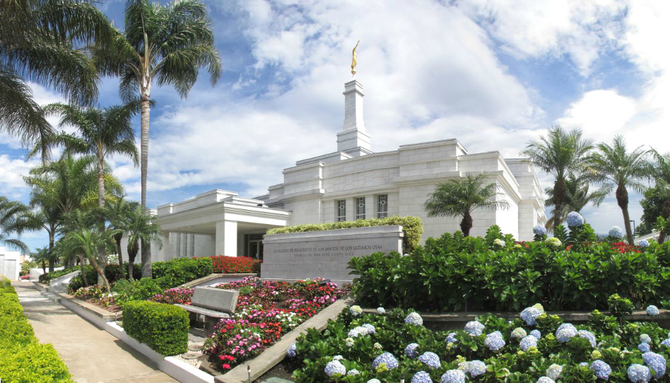

Temple Album
☰
Home
Old
New
Large
Small
Temple Album

Aba Nigeria Temple
Accra Ghana Temple
Alabang Philippines Temple
Atlanta Georgia Temple
Bern Switzerland Temple
Bogota Colombia Temple
Dallas Texas Temple
Lima Peru Temple
San Jose Costa Rica Temple